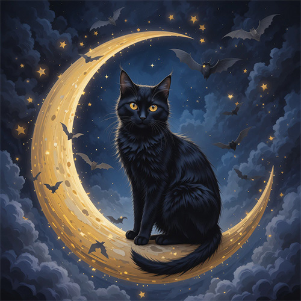

Halloween Movie
This article is about the horror franchise. For the first film from 2000, see Final Destination (film). For the fourth film from 2009, see The Final Destination. For other uses, see Final Destination (disambiguation).
28 Weeks Later is a 2007 post-apocalyptic horror film directed by Juan Carlos Fresnadillo, who co-wrote it with Rowan Joffé, Enrique López Lavigne and Jesus Olmo. It is the sequel to 28 Days Later (2002) and the second film in the 28 Days Later series.

It (also known as Stephen King's IT) is a 1990 ABC two-part psychological horror drama[1] miniseries directed by Tommy Lee Wallace and adapted by Lawrence D. Cohen from Stephen King's 1986 novel of the same name.

Friday the 13th is an American horror media franchise that comprises twelve slasher films, a television series, novels, comic books, video games, and tie‑in merchandise. The franchise primarily focuses on the fictional character Jason Voorhees, who was thought to have drowned as a boy at Camp Crystal Lake due to the negligence of the camp staff.

The Conjuring is a 2013 American supernatural horror film directed by James Wan and written by Chad Hayes and Carey W. Hayes. It is the inaugural film in The Conjuring Universe franchise.[4] Patrick Wilson and Vera Farmiga star as Ed and Lorraine Warren, paranormal investigators and authors associated with prominent cases of haunting.
We deliver
future-ready solutions and
impactful innovations worldwide
Happy Halloween
create your own story.
Halloween Picture
- 